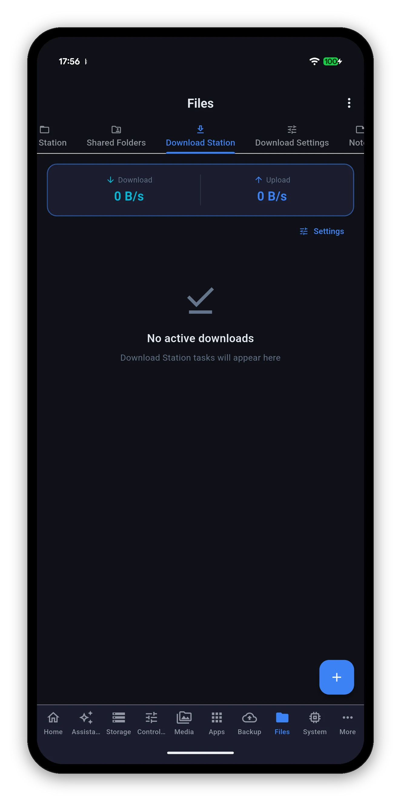
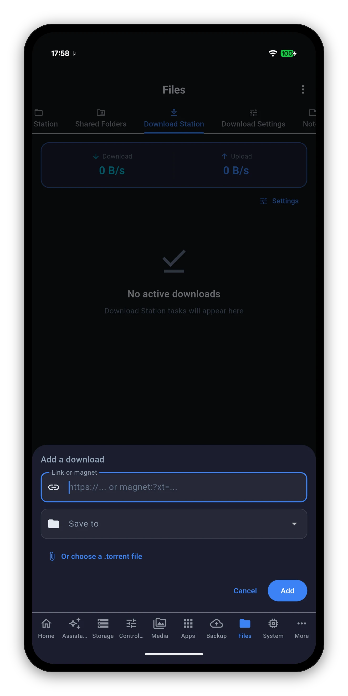

Paste a link or a magnet, or pick a .torrent, and the NAS does the downloading. Watch progress, pause and resume, and change the settings it is actually configured with.

A speed header at the top - total download and upload across every task - then the tasks themselves.


Tap + at the bottom right.
https:// URL or a magnet:?xt= link both go in the same field.Its own sub-view, grouped the way Download Station groups them. Editable values carry a tick to confirm the change; read-only ones are shown as facts.
| Group | Setting | What it does |
|---|---|---|
| BitTorrent | Listening port | The TCP port Download Station listens on. Editable. |
| Download limit | In KB/s. 0 means no limit. Editable. | |
| Upload limit | In KB/s. 0 means no limit. Editable. | |
| Maximum peers | How many peers a torrent may connect to. | |
| DHT | Whether the distributed hash table is on, and on which port. | |
| FTP and HTTP | Download limit | A separate cap for plain HTTP and FTP downloads. 0 means no limit. Editable. |
| Tasks and schedule | Tasks at once | How many downloads run simultaneously - and the app tells you the maximum your NAS allows, so you are not guessing at the ceiling. Editable. |
| Alternative schedule | Whether a different speed schedule is in force at certain hours. | |
| Destination | Default folder | Where downloads land when a task does not name a folder. Shown as Not set when there is none, rather than blank. |
| Runs on | Which volume the Download Station package itself is installed on. | |
| eMule | Whether the eMule service is enabled. |
Only the settings your NAS actually reported are shown. A section the app could not read is named as unread rather than drawn as zero.
That is not pedantry. Here, 0 means no limit - so a failed read rendered as 0 would tell you your downloads are uncapped when the truth is that nobody knows. A value that could mean two things is worth naming as unknown, and this screen names it.
Package Center, Docker, Compose projects and virtual machines.